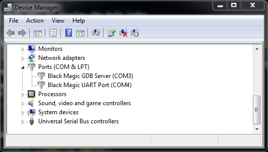

Getting Started¶
Get a Black Magic Probe¶
If you don’t have one already, you’ll need to get a Black Magic Probe.
Connecting to your computer¶
Connect the Black Magic Probe to your computer’s USB port. When connected via USB, the Black Magic Probe will enumerate as, among other bits, a pair of CDC-ACM (USB serial) devices.
On Linux, the OS should present these as ttyACM devices. On macOS they should be presented as pairs of tty.
and cu. devices, and on Windows they should be presented as a pair of COM ports.
On Linux you can check the kernel log to find the device that was allocated:
user@host ~ $ sudo dmesg
[460705.378940] usb 7-5: new full-speed USB device number 24 using ohci-pci
[460705.594118] usb 7-5: New USB device found, idVendor=1d50, idProduct=6018, bcdDevice= 2.00
[460705.594131] usb 7-5: New USB device strings: Mfr=1, Product=2, SerialNumber=3
[460705.594137] usb 7-5: Product: Black Magic Probe v2.0.0
[460705.594142] usb 7-5: Manufacturer: Black Magic Debug
[460705.594146] usb 7-5: SerialNumber: 8BB20695
[460705.600355] cdc_acm 7-5:1.0: ttyACM0: USB ACM device
[460705.604234] cdc_acm 7-5:1.2: ttyACM1: USB ACM device
The first interface provides the GDB server, and the second provides a USB to UART adapter.
Note
On Linux, this guide assumes you have installed the udev rules file for your distribution from the repository.
On Windows, when you first connect, the Black Magic Probe should be detected as two COM ports. The first COM port is the GDB extended remote server and the second one is USB to Serial adapter on the back of the board. To find the allocated ports, check the Device Manager:

Note
For older Windows versions (Windows 7 and older), you will be prompted to install a driver. You can download the driver .inf from the repository.
Note
If you are on Windows 10 and want to upgrade the firmware to the probe itself, you can install the WinUSB driver via Zadig. This will give you access to the DFU interface of the Black Magic Probe and allow you to use dfu-util to upgrade the Black Magic Probe firmware. (You do not need to install this driver if you only plan to use the Black Magic Probe and do not need/want to upgrade the firmware.) Windows 10 displays the BMP probe ports using the generic title, “USB Serial Device”, as seen below:

Connecting to the software¶
To use the Black Magic Probe, you will need a suitable toolchain for your target processor. For ARM Cortex-M based
targets, the project can recomend the official
ARM GNU Toolchain. For RISC-V based targets,
the project can recomend the RISC-V Collab GNU Toolchain.
These toolchains include a suitable GDB as part of the bundle. Alternatively you can use the gdb-multilib of your
distribution if you’re on Linux or macOS (via brew).
user@host ~ $ arm-none-eabi-gdb
GNU gdb (Arm GNU Toolchain 14.2.Rel1 (Build arm-14.52)) 15.2.90.20241130-git
Copyright (C) 2024 Free Software Foundation, Inc.
License GPLv3+: GNU GPL version 3 or later <http://gnu.org/licenses/gpl.html>
This is free software: you are free to change and redistribute it.
There is NO WARRANTY, to the extent permitted by law.
Type "show copying" and "show warranty" for details.
This GDB was configured as "--host=x86_64-pc-linux-gnu --target=arm-none-eabi".
Type "show configuration" for configuration details.
For bug reporting instructions, please see:
<https://bugs.linaro.org/>.
Find the GDB manual and other documentation resources online at:
<http://www.gnu.org/software/gdb/documentation/>.
For help, type "help".
Type "apropos word" to search for commands related to "word".
No symbol table is loaded. Use the "file" command.
(gdb)
The GDB remote debugging protocol is implemented over the Black Magic Probe’s CDC-ACM interface. To connect your ARM GDB to the target device use the following commands:
(gdb) target extended-remote /dev/ttyBmpGdb
Remote debugging using /dev/ttyBmpGdb
(gdb) monitor auto_scan
Target voltage: 3.3V
Available Targets:
No. Att Driver
1 STM32F40x M4
(gdb) attach 1
Attaching to Remote target
0x080071b2 in ?? ()
If auto_scan does not find your target, or you know the target is specifically available via only one of JTAG
or SWD (ARM’s Serial-Wire Debug), you may use monitor jtag_scan or monitor swd_scan (respectively) to have
BMD find your target.
Once attached, all the standard GDB commands may be used to start and control the execution of the embedded application. GDB Commands provides a quick introduction.
Note
On macOS use the /dev/cu.usbmodem<somenumber>. Don’t use the tty version of this device as this one will
freeze gdb when it tries to open it.
Note
By default, VCC is not enabled on either UART or JTAG/SWD, to prevent conflicts between multiple power sources.
To enable the probe as a power source, you must use the monitor tpwr enable gdb command.
On Windows, use the the COM port instead of /dev/ttyBmpGdb. For ports COM10 and higher, add the prefix \\.\,
for example:
target extended-remote COM3
target extended-remote \\.\COM10
Note
It is safe to always use the \\.\ prefix even for ports lower than COM10. So when you are writing scripts you
can just always prefix the COM port number.
Video Tutorial¶
Esden created a video walk-through of using Black Magic Probe with the 1Bitsy microcontroller board on Linux.
If you have additional tutorial resources for the use of Black Magic Probe let us know so we can include them here.
Getting started with open-source Cortex-M development¶
See this presentation, porting a basic Unix program to an embedded Cortex-M3 using libopencm3.
The gcc-arm-embedded readme is also worth a read.